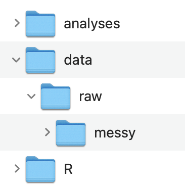

# ---- Setup -------------------------------------------------------------------
# packages
library(here)
library(qualtRics) # you will need to first install this package
library(dplyr)
library(tidyr)
library(stringr)
# ------------------------------------------------------------------------------
# ---- Import Data -------------------------------------------------------------
data_import <- read_survey(here("data/raw", "rawdata_messy.csv"))
# ------------------------------------------------------------------------------
# ---- Tidy Data ---------------------------------------------------------------
data_survey1 <- data_import |>
select() |>
pivot_longer() |>
mutate()
data_survey2 <- data_import |>
select() |>
pivot_longer() |>
mutate()
# ------------------------------------------------------------------------------
# ---- Save Data ---------------------------------------------------------------
write_csv(data_survey1, here("data/raw", "survey1_tidy.csv"))
write_csv(data_survey2, here("data/raw", "survey2_tidy.csv"))
# ------------------------------------------------------------------------------
rm(list = ls())Data Preparation - Qualtrics
In Class 4, we saw that the first stage in the data processing workflow is data preparation. This is a critical, though often overlooked stepped.
There are certain considerations that need to be made when working with data generated from a Qualtrics Survey (a popular survey tool used in psychology and other fields). This guide is meant to help you figure out the steps you need to take in order to prepare your data from a Qualtrics Survey for scoring and analysis. The end product of this data preparation stage is one or more tidy raw data files.
This guide assumes you have completed Classes 1 - 4. You should reference materials in those classes to help you at this stage.
GitHub Copilot in RStudio
Not required, but you might find it useful to setup GitHub Copilot in RStudio to have an AI assistant help you write code. I find it useful for writing tedious repetitive code that is often required during this data preparation stage.
Setup Project
Your project should be stored on a shared drive (e.g., Dropbox, OneDrive, Google Drive) so that all your team members can access it.
- Create a folder for your project that contains the three following folders
üìÅ analyses
üìÅ data
üìÅ R
- Inside of the data folder create a raw folder
üìÅ data
üìÅ raw
If you have multiple raw data files you may consider creating an organization like this

- Create an RStudio Project:
File -> New Project… -> Existing Directory
Data
In your study on Qualtrics go to the Data & Analysis tab
Download the data as a .csv file
Move the downloaded data file to your data/raw or data/raw/messy folder
Rename the data file to something shorter (e.g., rawdata_messy.csv)
- If you have multiple raw data files you should name the data files that correspond to what measure it came from
Template R Script
The main goal at this stage is to complete an R script to create tidy raw data files from messy raw data files. A tidy raw data file is just a cleaned up version of the original raw data file that is easier to understand and is formatted in a way that makes it easy to use.
- Create a new R script file named: 1_tidyraw.R
- If you have multiple messy raw data files, you should create separate tidy scripts for each one and name the script file with the measure that it comes from (you can keep the 1_ prefix for all of them).
- Save it in the R folder
- Copy and paste this template into your script: (use the copy icon button on the top-right)
- Use the 1_tidyraw.R script template to get started. It is just a template, you will need to modify it for your data specifically. The template contains 4 main sections:
- Setup
- Import Data
- Tidy Data
- Save Data
Important
If you have multiple messy raw data files then you should create a separate tidyraw script for each one.
However, if you only have one raw data file because your data is all collected on a single Qualtrics Survey then you can just create one tidyraw script
Setup
The Setup section is to load any packages used in the script.
Qualtrics does not make it easy to import data into R. Read about it here
However, someone has created a function read_survey() to import data from Qualtrics. You will need to install the qualtRics package first.
install.packages("qualtRics")You might also need to install the stringr package for later on
install.packages("stringr")
Warning
These should not go in your R script! Just type them directly in the Console window
Import Data
The Import Data section is simply to import the data. Use read_survey() to import your Qualtrics Survey data.
I suggest using the here() package to specify the file path. This was covered in Class 4.
Tidy Data
The Tidy Data section is where most of the work needs to be done. You should be using dplyr and tidyr to do most of the work here, though you may need other packages and functions. You can delete whatever is in there now, that is just a placeholder as an example of the type of functions you might use. See the following class materials to help you in this section:
Understanding the Messy Raw Data File
You should take some time to better understand your messy raw data file:
Use functions, such as colnames() and unique(), that we learned in Class 1: An Introduction to Working with Data in R to explore your imported data file.
- In a document, write down the column names that go with each questionnaire/scale. If the scale has subscales within it, note which column names go with those subscales.
- Which column is associated with unique IDs for each participant?
- Are there any other columns that are important?
- For each questionnaire/scale how are responses recorded?
- Numeric? What is the range of possible values?
- Character? What are the response options?
- e.g. strongly disagree, disagree, agree, strongly disagree
The amount of time it took for you to do those steps is the reason we are doing this data preparation step. The end product will hopefully be a tidy raw data file that is way easier to understand, even for someone that was not involved in the project.
For example you might have a data frame that is structured like this
Are you able to understand what questionnaires/scales this data contain? And which questions go together?
There is a bit of structure in the column names but that is about it. By the end of this guide we will create a tidy version of this messy data file.
Tidying Up
How you need to tidy up your data file will depend on the nature of your Qualtrics study used to generate your data. However, there are some common messy problems we can address for Qualtrics Survey data.
One problem is that if you have multiple questionnaires with many items, then there are probably way too many columns to sort through. (this is not the case with our example data because I am keeping it simple)
Another major problem with the messy raw data from Qualtrics is that everything is spread across columns (wide format). When that is the case, we cannot visually group certain columns together making it challenging to understand which questions/items go together. Let alone, the column names are often times meaningless.
Finally, there is information missing from the messy raw data file that can be added.
The name or acronym of the questionnaire
If there are subscales: the name of those scales and which items correspond to which subscale
You can address these problems with your data by:
- Creating a separate data frame for each questionnaire:
select() - Converting the data frame to long format:
pivot_longer() - Add and modify columns to make the data easier to understand:
mutate()andcase_when()
Notice in the script template I laid out the general format for this.
data_survey1 <- data_import |>
select() |>
pivot_longer() |>
mutate()
data_survey2 <- data_import |>
select() |>
pivot_longer() |>
mutate()Separate Questionnaires
Separating the questionnaires into different data frames is easy, but you need to know which column names go with which questionnaire first (which is why I had you do this above).
Use the select() function from dplyr . This will create a separate data frame that only contains columns corresponding to a single questionnaire.
For example
data_survey1 <- data_import |>
select(ID, Q21.., Q22.., Q23..)
data_survey2 <- data_import |>
select(ID, SQ_S1, SQ_S2, SQ_P3)
Important
You need to use the special type of quotation marks
` `if your column names contain special charaters like: a space,$,%,-, and more…You should also keep a column corresponding to the unique participant ID
View the Data Frames tab to see the resulting data frames
Convert to Long Format
It is still not clear from the data frame whether there are subscales and which items go together. This is where converting the data frame to a long format can make this data easy to understand and work with.
Use the pivot_longer() function from tidyr to do this. Again, notice in the script template I laid out the general format for this. You can pipe the result of select() onto pivot_longer() . This will produce a data frame that has one row for every item in the questionnaire/scale and a single column with all the responses.
Note
Reference materials from Class 2 for how to use pivot_longer()
Using the sample tables from above we might do something like
data_survey1 <- data_import |>
select(ID, Q21.., Q22.., Q23..) |>
pivot_longer(cols = starts_with("Q"),
names_to = "Item",
values_to = "Response")
data_survey2 <- data_import |>
select(ID, starts_with("SQ_")) |>
pivot_longer(cols = starts_with("SQ_"),
names_to = "Item",
values_to = "Response")View the Data Frames tab to see the resulting data frames
Add and Modify Columns
We can then:
Create a column for the name of the questionnaire
Clean up the values in the
ItemcolumnCreate a column containing information about subscales (if there are any)
Recode values int he
Responsecolumn
Creating the name of the questionnaire is easy using mutate()
data_survey1 <- data_import |>
select(ID, Q21.., Q22.., Q23..) |>
pivot_longer(cols = starts_with("Q"),
names_to = "Item",
values_to = "Response") |>
mutate(Questionnaire = "ERI")
data_survey2 <- data_import |>
select(ID, starts_with("SQ_")) |>
pivot_longer(cols = starts_with("SQ_"),
names_to = "Item",
values_to = "Response") |>
mutate(Questionnaire = "SCS")View the Data Frames tab to see the resulting data frames
To clean up values in Item you can use the str_remove() function from stringr . You might want to convert Item to numeric if you remove all string character values.
See the stringr documentation for convenient functions for working with non-numeric values.
data_survey1 <- data_import |>
select(ID, Q21.., Q22.., Q23..) |>
pivot_longer(cols = starts_with("Q"),
names_to = "Item",
values_to = "Response") |>
mutate(Questionnaire = "ERI",
Item = str_remove(Item, "Q2"),
Item = str_remove(Item, "\\.."),
Item = as.numeric(Item))
data_survey2 <- data_import |>
select(ID, starts_with("SQ_")) |>
pivot_longer(cols = starts_with("SQ_"),
names_to = "Item",
values_to = "Response") |>
mutate(Questionnaire = "SCS",
Item = str_remove(Item, "SQ_"))
Note
I used the notation "\\.." to remove trailing periods. The \\ were required because a . serves as a special notation in R and dplyr syntax. \\ in many languages says treat . as a literal period not as a special notation.
View the Data Frames tab to see the resulting data frames
If there are subscales, we can create a column with information about which items belong to which subscale. You should have identified this information for your data in the steps above. (If there are no subscales then you do not need this step).
We can use case_when() from dplyr() to do this.
For this sample data:
data_survey1 <- data_import |>
select(ID, Q21.., Q22.., Q23..) |>
pivot_longer(cols = starts_with("Q"),
names_to = "Item",
values_to = "Response") |>
mutate(Questionnaire = "ERI",
Item = str_remove(Item, "Q2"),
Item = str_remove(Item, "\\.."),
Item = as.numeric(Item),
Subscale = case_when(between(Item, 1,2) ~ "Emotion_Regulation",
Item == 3 ~ "Emotion_Reappraisal"))
data_survey2 <- data_import |>
select(ID, starts_with("SQ_")) |>
pivot_longer(cols = starts_with("SQ_"),
names_to = "Item",
values_to = "Response") |>
mutate(Questionnaire = "SCS",
Item = str_remove(Item, "SQ_"),
Subscale =
case_when(Item %in% c("S1", "S2") ~ "Friendship_Quality",
Item == "P3" ~ "Community_Engagement"))
Note
Note that in case_when() I am just providing you with different options you can use as a shorthand.
between()is for numeric values and results in TRUE when a value is within a certain range. In this example the range is dumb, just 1 to 2.Item %in% c("S1", "S2")reads as: Is Item in this list of “S1”, “S2”?. If Item is in this list, then set Subscale to “Friendship_Quality”
Alternatively, you can do this in a longer format using a series of == for every single item:
case_when(Item == 1 ~ "Emotion_Regulation",
Item == 2 ~ "Emotoin_Regulation",
Item == 3 ~ "Emotion_Reappraisal")But you can see that this can get quite tedious when you have a lot of items in one scale.
View the Data Frames tab to see the resulting data frames
You may want to create an additional column that converts the Response into numeric (or vice versa if it is already in numeric you may want to convert it to a character string).
Again we can use case_when()
data_survey1 <- data_import |>
select(ID, Q21.., Q22.., Q23..) |>
pivot_longer(cols = starts_with("Q"),
names_to = "Item",
values_to = "Response") |>
mutate(Questionnaire = "ERI",
Item = str_remove(Item, "Q2"),
Item = str_remove(Item, "\\.."),
Item = as.numeric(Item),
Subscale = case_when(between(Item, 1,2) ~ "Emotion_Regulation",
Item == 3 ~ "Emotion_Reappraisal"),
Response_Code = case_when(Response == "never" ~ 1,
Response == "almost never" ~ 2,
Response == "rarely" ~ 3,
Response == "sometimes" ~ 4,
Response == "often" ~ 5,
Response == "almost always" ~ 6,
Response == "always" ~ 7))
data_survey2 <- data_import |>
select(ID, starts_with("SQ_")) |>
pivot_longer(cols = starts_with("SQ_"),
names_to = "Item",
values_to = "Response") |>
mutate(Questionnaire = "SCS",
Item = str_remove(Item, "SQ_"),
Subscale =
case_when(Item %in% c("S1", "S2") ~ "Friendship_Quality",
Item == "P3" ~ "Community_Engagement"),
Response_Code =
case_when(Response == "strongly disagree" ~ 1,
Response == "disagree" ~ 2,
Response == "neither agree nor disagree" ~ 3,
Response == "agree" ~ 4,
Response == "strongly agree" ~ 5))View the Data Frames tab to see the resulting data frames
Reorder Columns
Finally, we may want to reorder the columns in a way that makes more sense using select():
data_survey1 <- data_import |>
select(ID, Q21.., Q22.., Q23..) |>
pivot_longer(cols = starts_with("Q"),
names_to = "Item",
values_to = "Response") |>
mutate(Questionnaire = "ERI",
Item = str_remove(Item, "Q2"),
Item = str_remove(Item, "\\.."),
Item = as.numeric(Item),
Subscale = case_when(between(Item, 1,2) ~ "Emotion_Regulation",
Item == 3 ~ "Emotion_Reappraisal"),
Response_Code = case_when(Response == "never" ~ 1,
Response == "almost never" ~ 2,
Response == "rarely" ~ 3,
Response == "sometimes" ~ 4,
Response == "often" ~ 5,
Response == "almost always" ~ 6,
Response == "always" ~ 7)) |>
select(ID, Questionnaire, Subscale, Item, Response, Response_Code)
data_survey2 <- data_import |>
select(ID, starts_with("SQ_")) |>
pivot_longer(cols = starts_with("SQ_"),
names_to = "Item",
values_to = "Response") |>
mutate(Questionnaire = "SCS",
Item = str_remove(Item, "SQ_"),
Subscale =
case_when(Item %in% c("S1", "S2") ~ "Friendship_Quality",
Item == "P3" ~ "Community_Engagement"),
Response_Code =
case_when(Response == "strongly disagree" ~ 1,
Response == "disagree" ~ 2,
Response == "neither agree nor disagree" ~ 3,
Response == "agree" ~ 4,
Response == "strongly agree" ~ 5)) |>
select(ID, Questionnaire, Subscale, Item, Response, Response_Code)We now end up with tidy raw data frames
You can see these data frames are much easier to understand and to work with. Someone outside of your project would have a decent understanding of what information is contained and what is being measured.
You need to have your data in this type of format as it will be easier for you to start thinking about scoring and analyzing your data
Save Data
I suggest saving a different tidy raw data file for each questionnaire/scale you have. This is because each one may have different ways of scoring the data, and different things to think about. It will also help keep your data files and scripts organized if you need to go back and modify them.
Store your tidy raw data files in data/raw and use the name of the scale in the file name.
We have not talked about the write_csv() function but it is pretty simple to use as you can see.
write_csv(data_survey1, here("data/raw", "ERI_tidy.csv"))
write_csv(data_survey2, here("data/raw", "SCS_tidy.csv"))